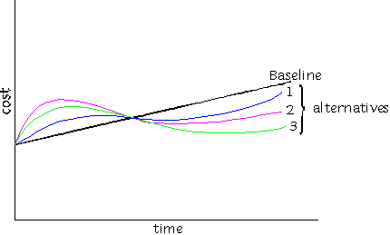
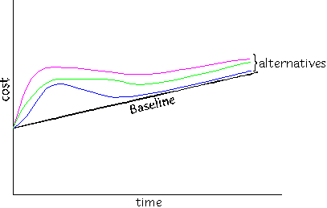
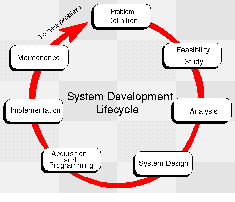
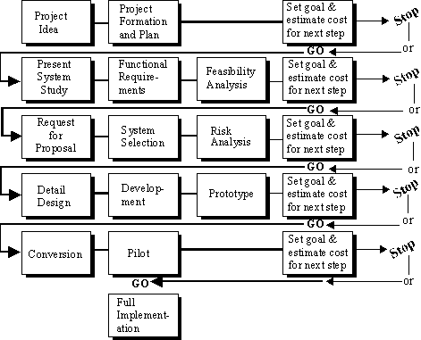
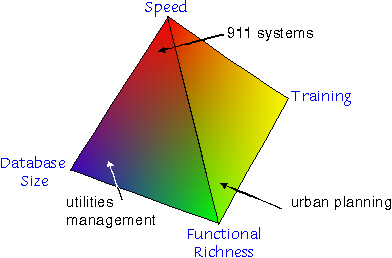
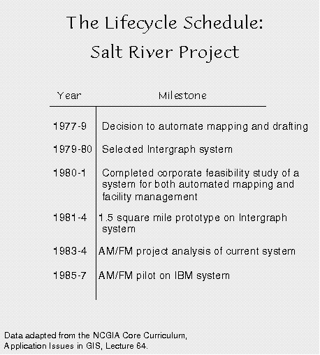

This page is also available in a framed
version. For convenience, we have provided a full Table
of Contents.
There is a temptation, when a new technology like GIS becomes available, to improvise a solution to its use, that is to get started without considering where the project will lead. The greatest danger is that decisions made in haste or on the spur of the moment will have to be reversed later or will prove too costly to implement, meaning a GIS project may have to be abandoned. To avoid disappointing experiences like these, GIS professionals have developed a well-defined planning methodology often referred to as project lifecycle. Lifecycle planning involves setting goals, defining targets, establishing schedules, and estimating budgets for an entire GIS project.
The original impetus for developing effective lifecycle
planning
was cost containment. For many decades, the rationale for
implementing
new information technologies was that, in the long run, such
projects
would
reduce the cost of business operations.

This optimistic appraisal of the benefits of information
technologies
has not borne out in the American economy during the past two
decades.
In almost all cases, adopting new information technologies has added
to the cost of business operations without producing a
corresponding
increase in traditional measures of labor productivity, as in the
following
graph.

This does not mean that information technologies have been a failure. Rather, these systems allow users to accomplish a greater range of varied and complex tasks, but at a higher cost. Users are not so much doing their previous work at faster speeds, but assuming new tasks offered by the new technologies. Support staff once satisfied with producing in-house documents may now be tempted to issue them using desktop publishing software or on-line in the Worldwide Web. Cartographers once satisfied with producing discrete utility maps for individual construction projects may be tempted to create an encompassing map and GIS database containing maintenance records for an entire city.
It is generally recognized that, for the foreseeable future, most information technologies projects will have to be justified on the basis of a "do more, pay more" philosophy. This means that effective lifecycle planning is all the more important. In the past, projected existing costs could be used as a baseline against which improvements could be measured. If the cost curve for new information technologies is always above the baseline, then greater care must be exerted in setting goals, establishing targets, and estimating budgets. There is far too great a danger that, in the absence of such checks and balances, a project may grow out of control.

Particular care is exerted in defining the nature of a problem or new requirement, estimating the costs and feasibility of proceeding, and developing a solution. This process should not be abridged; each step is important to the overall process. If this problem solving approach is applied to the design and creation of an entire GIS project a few additional subtasks must be addressed, as in the diagram below.

Also put in links to examples of project planning materials, FRS, RFP, etc.
1. Setting goals and estimating costs.
Each stage of the project lifecycle process involves setting clear goals for the next step and estimating the cost of reaching those goals. If the necessary funds or time are unavailable, it is better to stop the process than to continue and see the project fail. The process can begin again when funds are available.
2. The functional requirements study.
The functional requirements study is arguably the most important single step in the planning process. Here, careful study is devoted to what information is required for a project, how it is to be used, and what final products will be produced by the project. For a large organization, this amounts to a "map" of how information flows into, around, and out of each office and agency. The FRS also specifies how often particular types of information are needed and by whom. Furthermore, the FRS can look into the future to anticipate types of data processing tasks that expand upon or enhance the organization's work.
By assessing information flows so carefully, the FRS allows an organization to set goals for all of the subsequent steps in the lifecycle planning process. The FRS also allows an organization to consider information flows across all the domains of its work, forcing it to consider how different systems will be integrated. Without taking an encompassing view of information flows, a project implemented in one unit may be of no use to another. It is important to take this broad view of information flows to avoid stranding projects between incompatible systems.
3. The creation of a prototype.
By the time a project has moved into the development stage, the greatest temptation is to jump forward to full implementation. This is a very risky path, for it leaves out the prototyping stage. Prototypes are a critical step because they allow the system to be tested and calibrated to see whether it meets expectations and goals. Making adjustments at the prototype stage is far easier than later, after full implementation. The prototype also allows users to gain a feel for a new system and to estimate how much time (in training and conversion) will be required to move to the pilot and full implementation stages. Finally, a successful prototype can help enlist support and funding for the remaining steps in the lifecycle planning process.
As is noted in the module on Managing Error , the prototype provides a good opportunity for undertaking sensitivity analysis--testing to see how variations in the quality of inputs affects outputs of the system. These tests are essential for specifying the accuracy, precision, and overall quality of the data that will be created during the conversion process. If these analyses are not performed, there is a chance that much time and effort will be wasted later.
Speed: The speed with which a system can respond to queries and achieve solutions.
Functional richness: The analytical capabilities of the system and its flexibility in addressing a wide range of spatial and statistical problems.
Database Size: The ability to handle large quantities of spatial and statistical data.
Training: The amount of time required to bring users
up
to speed on a system and to use the database on a regular basis.

A. Some applications, such as emergency vehicle dispatch (911 systems), require high performance speed. Lives are at stake and the system must be able to match telephone numbers to addresses and dispatch vehicles instantly. At the same time, an emergency dispatch system will only be used to serve this single function and the database will contain only a street grid, address ranges, and links to telephone numbers.
B. Some applications, such as those undertaken by water, gas, and power utilities, involve storing vast quantities of information about huge service territories. Some utilities serve hundreds or thousands of square miles of territory. Detailed information must be maintained about all facilities within these territories. Managing these quantities of information is a key to selecting the right GIS system. At the same time, speed of response may be less of a concern since a given piece of information may only have to accessed once a month or even once a year. Furthermore, functional richness may be useful, but many tasks (such as maintenance and planning) will require a limited range of analytical capabilities.
C. Some applications, such as those related to urban planning and environmental management, may benefit most from great functional richness. Planning and management tasks may be many and varied, meaning that users must have access to a wide range of spatial and statistical functions. These may not be used often but, when used, may be essential to the success of a project.
D. Some GIS may be used frequently by users with little training or in situations where there will be high staff turnover. This is a critical consideration for GIS that are used as part of management or executive information systems. Upper-level managers who can benefit greatly from the information provided by a GIS may have limited time (or inclination) for training. It is important in these situations to consider the time it takes to bring new users up to speed with a new system.
Of course, these are only a few of the factors and scenarios that arise in GIS system selection. Compromises may have to be achieved with other system features.
Too often, users imagine that they can find the "perfect" or "best" GIS. The best GIS is always the one that gets a job done at the right price and on schedule.

Once a prototype or pilot has been approved, even more time will elapse before full implementation is achieved. Some municipal GIS projects have been underway for over a decade and still have far to go before complete implementation and compilation of a full dataset .
Prototype and pilot projects are kept small, as is
indicated
in
the following table. Remember, prototypes and pilots are intended
to
demonstrate
functions and interfaces. What works best is a carefully selected
test
area that presents examples of common workflows. Its areal size of
is
little
consequence in most applications.
This point is not always understood. Some researchers reject the methodology of project planning because it seems overly formal and stringent given their modest research goals. Instead, they improvise a GIS solution. But improvised solutions are always a risk. Attention to the process of careful planning can waylay such risks. Perhaps the essence of this process can be summarized in three points.
1. Think ahead to how the GIS will be used, but keep in mind what sources are available.
Designing an effective GIS involves setting clear goals. The temptation is to rush ahead and begin digitizing and converting data without establishing how the system will be used. Even for small GIS projects, it is wise to engage in a modest functional requirements study. This allows the user to gain an idea of exactly what data sources are required, how they will be processed, and what final products are expected. Without clear-cut goals, there is too great a danger that a project will omit key features or include some that are irrelevant to the final use.
2. Exert special care in designing and creating the database.
Again, it is easy to rush ahead with the creation of a database, and then find later that it has to be reorganized or altered extensively. It is far more economical to get things right the first time. This means that the researcher should chart out exactly how the database is to be organized and to what levels of accuracy and precision. Attention to (and testing) of symbolization and generalization will also pay off handsomely.
3. Always develop a prototype or sample database to test the key features of the system.
No matter the size of a project, the researcher should aim to create a prototype first before moving toward full implementation of a GIS. This allows the researcher move through all of the steps of creating and using the system to see that all procedures and algorithms work as expected. The prototype can be a small area or may be confined to one or two of the most critical layers. In either case, testing a prototype is one step that should not be overlooked.
The security of data is always a concern in large GIS projects. But there is more to security than protecting data from malicious tampering or theft. Security also means that data is protected from system crashes, major catastrophes, and inappropriate uses. As a result, security must be considered at many levels and must anticipate many potential problems. GIS data maintained by government agencies often presents difficult challenges for security. While some sorts of data must be made publicly accessible under open records laws, other types are protected from scrutiny. If both types are maintained within a single system, managing appropriate access can be difficult. Distribution of data across open networks is always a matter of concern.
Most major GIS datasets will outlive the people who create them. Unless all the steps involved in coding and creating a dataset are documented, this information will be lost as staff retire or move to new positions. Documentation must begin at the very start of GIS project and continue through its life. It is best, perhaps, to actually assign a permanent staff to documentation to make sure that the necessary information is saved and revised in a timely fashion.
C. Data Integrity and Accuracy
When mistakes are discovered in a GIS database, there must be a well-defined procedure for their correction (and for documenting these corrections). Furthermore, although many users may have to use the information stored in a GIS database, not all of these users should be permitted to make changes. Maintaining the integrity of the different layers of data in a comprehensive GIS database can be a challenging task. A city's water utility may need to look at GIS data about right-of-ways for power and cable utilities, but it should not be allowed to change this data. Responsibility for changing and correcting data in the different layers must be clearly demarcated among different agencies and offices.
GIS datasets employed in government or by utilities will have many users. One portion of the dataset may be in demand simultaneously by several users as well as by staff charged with updating and adding new information. Making sure that all users have access to current data whenever they need it can be a difficult challenge for GIS design. Uncontrolled usage may be confusing to all users, but the greatest danger is that users may actually find themselves interfering with the project workflow or even undoing one another's work.
Some GIS datasets will never be "complete." Cities and utility territories keep growing and changing and the database must be constantly updated to reflect these changes. But these changes occur on varying schedules and at varying speeds. Procedures must be developed to record, check, and enter these changes in the GIS database. Furthermore, it may be important to maintain a record of the original data. In large GIS projects, updating the database may be the responsibility of a full-time staff.
In large GIS projects, every byte counts. If a database is maintained for 30-50 years, every blank field and every duplicated byte of information will incur storage costs for the full length of the project. Not only will wasted storage space waste money, it will also slow performance. This is why in large, long-term GIS projects, great attention to devoted to packing data as economically as possible and reducing duplication of information.
G. Data Independence and Upgrade Paths
A GIS database will almost always outlive the hardware and software that is used to create it. Computer hardware has a useable life of 2-5 years, software is sometimes upgraded several times a year. If a GIS database is totally dependent on a single hardware platform or a single software system, it too will have to be upgraded just as often. Therefore, it is best to create a database that is as independent as possible of hardware and software. Through careful planning and design, data can be transferred as ASCII files or in some metadata or exchange format from system to system. There is nothing worse than having data held in a proprietary vendor-supported format and then finding that the vendor has changed or abandoned that format.
In this way, GIS designers should think ahead to possible upgrade paths for their database. It is notoriously difficult to predict what will happen next in the world of computers and information technology. To minimize possible problems, thought should be given to making the GIS database as independent as possible of the underlying software and hardware.
These topics are also discussed in the module on Database
Concepts .
Safeguards on personal privacy have become a great concern over
the
past decade, particularly with the rise of the internet and
web. These concerns arise to two principal
situations. The first, is the hacking into, accidentally
release,
or inappropriate disclosure of privileged information which can
compromise an individual's privacy with respect to medical
conditions,
financial situation, sexual, political, religious beliefs &
values
and other privileged personal information. The second is the
ease
with which information and computer technologies permit the
creation of
information "mosaics" or personal profiles from small pieces of
seemingly innocuous, non-confidential
data.
Aronoff, Stan. 1989. Geographic Information Systems: A Management Perspective. WDL Publications: Ottawa.
Chapter 8, "How to Pick a GIS" in Clarke, Keith C. 2003. Getting Started with Geographic
Information Systems, 4th ed. Upper Saddle River,
NJ:
Prentice Hall.
Dagermond, Jack, Don Chambers, and Jeffrey R. Meyers. 1993. "Prototyping AM/FM/GIS Applications: Quality/Schedule Tradeoffs", Proceedings of the Thirteenth Annual ESRI User Conference. Palm Springs, CA. Vol. 2, p. 75-80.
Daniel, Larry. Identifying GIS for What It's Worth
Daniel, Larry. Looking and Thinking Beyond the Department
Chapter 11, "GIS Implementation and Project Management," in
Lo, C.P. and Albert K.W. Yeung.
2002. Concepts and
Techniques
of Geographic
Information Systems. Upper Saddle River, NJ:
Prentice Hall.
Huxhold, William. 1995. Managing Geographic Information System Projects. Oxford University Press: New York.
Chapters 17 (Managing GIS), 18 (GIS and Management, the Knowledge
Economy, and Information), and 19 (Exploiting GIS Assets and
Navigating
Constraints) in Longley, Paul A., Michael F. Goodchild, David J.
Maguire,
and David W. Rhind. 2005. Geographic
Informaiton Systems and Science, 2nd ed. Hoboken,
NJ:
Wiley.
Obermeyer, Nancy J. and Jeffrey K. Pinto. 2008. Managing Geographic Information Systems, 2nd ed. New York : Guilford Press